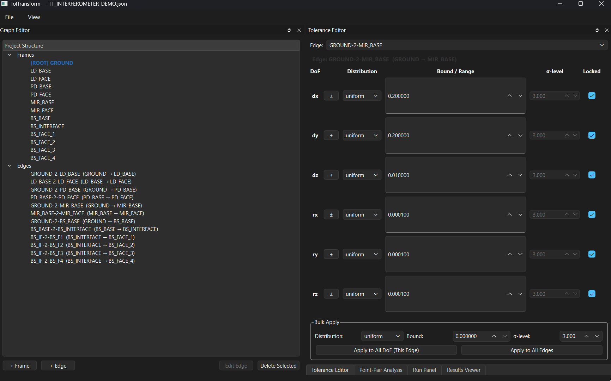
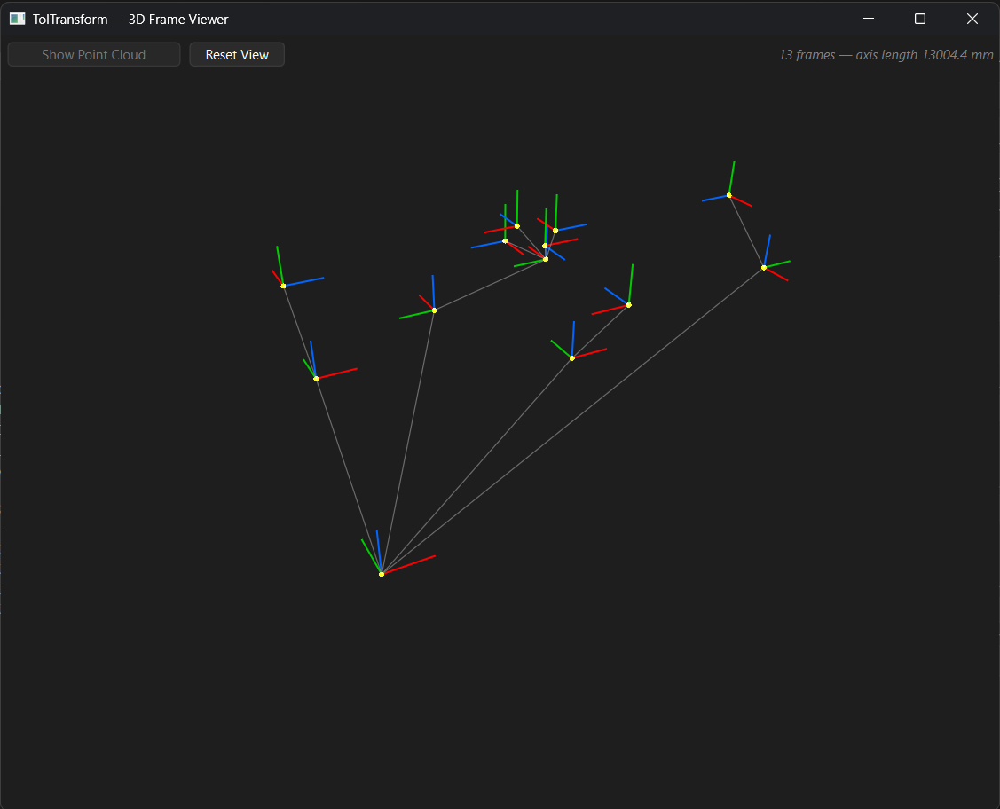
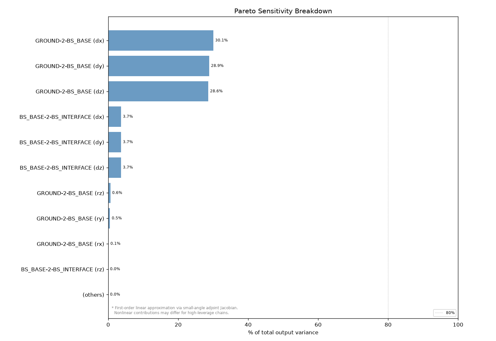
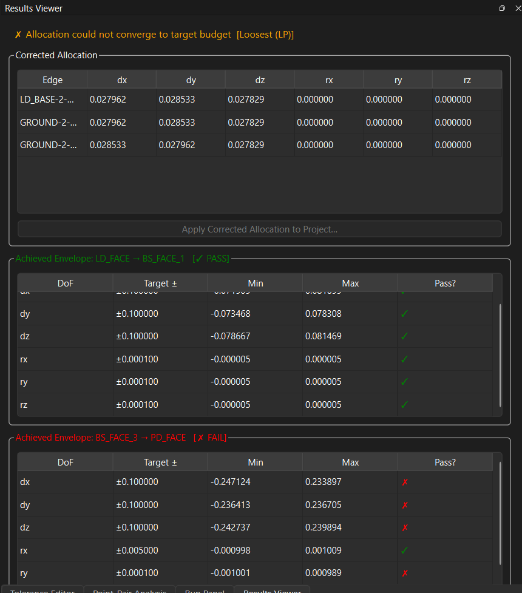

Personal Software Project
TolTransform
Key Skills
- Software Development
- Kinematics
- Tolerance Analysis
- Monte Carlo Simulation
- Optimization
Personal Software Project
Key Skills
Tolerance error budgeting for precision optomechanical assemblies is usually done in large spreadsheets. That works fine for simple linear stack-ups, but breaks down once an assembly has parallel constraint chains, shared reference frames, or needs inverse allocation (working backward from a performance requirement to per-interface tolerances). I built TolTransform to replace that workflow with a proper kinematic graph model.
Assemblies are represented as directed graphs, with coordinate frames as nodes and toleranced rigid transforms as edges. Tolerances are modeled as small twists in se(3), the Lie algebra for rigid-body motion, giving 3 translational and 3 rotational degrees of freedom per interface, and propagated along chains using the adjoint representation.
For exact propagation, the tool runs Monte Carlo simulation (50,000 to 500,000 trials), producing worst-case envelopes, percentile tables, confidence ellipsoids, and sensitivity rankings. The reverse direction, working backward from a performance requirement to per-interface tolerance bounds, is solved as an optimization problem, with an iterative loop that reconciles the linear allocation against the nonlinear Monte Carlo results.
I validated the approach against three physical benchmarks (a linear stack-up, a sine-bar lever-arm case, and common-ancestor cancellation) before trusting it on real assemblies.
The GUI is built in PySide6 (Qt), with a graph editor, tolerance editor, run panel, results viewer, and a 3D frame viewer for visualizing the assembly directly.
Frames and edges are defined explicitly. Each edge carries per-DoF distributions, bounds, and σ-levels, with bulk-apply tools for quickly setting up large assemblies.

The frame viewer renders every coordinate frame in the graph in 3D, so you can check the kinematic structure visually before running an analysis. Below is the interferometer setup from the top of this page next to its frame viewer representation, so you can see how the physical assembly maps onto the graph.

The Pareto sensitivity breakdown ranks which interfaces actually drive output variance. In this example, three DoF on a single edge account for nearly 90% of it, which tells you where tightening tolerance is worth the manufacturing cost and where it isn't.

The Results Viewer checks every interface envelope against its target and flags pass/fail, including when inverse allocation can't converge to a target budget. That's useful information on its own: it tells you the requirement is infeasible with the current architecture, not just that a search failed.
